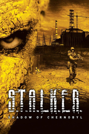

S.T.A.L.K.E.R.: Shadow of Chernobyl
Detalles
|  | |
| Tiempo de juego | No Jugado |
| Última actividad | Nunca |
| Añadido | 11/6/2024 14:41:31 |
| Modificado | 11/8/2024 17:35:27 |
| Estado de finalización | No Jugado |
| Librería | Playnite |
| Fuente | 6TB STORE |
| Plataforma | PC (Windows) |
| Fecha de lanzamiento | 3/20/2007 |
| Puntuación de la Comunidad | 93 |
| Puntuación de la Crítica | 82 |
| Puntuación de usuario | |
| Género | Acción Rol |
| Desarrollador | GSC Game World |
| Editor | GSC Game World |
| Característica | Cloud Saves Jcj Jcj En LAN Jcj En Línea Multijugador Préstamo Familiar Un Jugador |
| Enlaces | Punto de encuentro Discusiones Guías Noticias Página de la tienda PCGamingWiki |
| Tag | Acción Ambientales Aventura Basado en una novela Ciencia ficción Clásico Difíciles Disparos FPS Gestión de inventario Inmersivo Modificables Mundo abierto Posapocalípticos Primera persona Rol Supervivencia Supervivencia / Terror Terror Un jugador |
Descripción
La Zona, un lugar lleno de insondables maravillas y siniestras amenazas, es el antiguo territorio de exclusión cercano a la Planta de energía nuclear de Chernóbil. El sector más peligroso de la Tierra se cubrió aún más de misterio tras un extraño accidente en 2006. Está repleto de anomalías con valiosos artefactos, voraces mutantes y mezquinos matones, además de stalkers que buscan una nueva vida y formas de enriquecerse… ¡Ese podrías ser tú en S.T.A.L.K.E.R.: Shadow of Chernobyl!

Para sobrevivir, un stalker que se las precie nunca puede dejar de buscar. Son cosas como los valiosos trofeos, el equipamiento y los suministros, los nuevos amigos, los atajos o las respuestas a los enigmas más macabros de estas tierras las que te ofrecen una oportunidad de eludir la muerte, así que prepárate para una incursión en busca de tu destino en el centro de la Zona, el lugar más protegido contra visitantes indeseados.

El viaje de un stalker hasta su meta nunca es fácil. Una anomalía traicionera capaz de acabar incluso con los luchadores más veteranos, un voraz mutante extraviado, una traición incomprensible... hay muchas cosas que pueden costarte la vida. Prepárate para poner a prueba tu destreza y tu coraje para resistir a rivales y mutantes superiores a ti en número. Estate alerta incluso cuando estés a solas, pues, en la Zona, casi nada es lo que parece a primera vista.

Estas tierras inhóspitas atrapadas en un eterno otoño están llenas de cientos de vagabundos. Sin embargo, un stalker siempre va por su cuenta y se enfrenta a peligros a menudo ocultos. Escucha con atención, calcula bien cada paso que das y no confíes en nadie salvo en ti y en tu contador Geiger. Solo la intuición combinada con maestría, valentía y mente fría pueden salvar a un stalker libre de perderse en la Zona.

Características del juego:
BÚSQUEDA
Para sobrevivir, un stalker que se las precie nunca puede dejar de buscar. Son cosas como los valiosos trofeos, el equipamiento y los suministros, los nuevos amigos, los atajos o las respuestas a los enigmas más macabros de estas tierras las que te ofrecen una oportunidad de eludir la muerte, así que prepárate para una incursión en busca de tu destino en el centro de la Zona, el lugar más protegido contra visitantes indeseados.
PELIGROS
El viaje de un stalker hasta su meta nunca es fácil. Una anomalía traicionera capaz de acabar incluso con los luchadores más veteranos, un voraz mutante extraviado, una traición incomprensible... hay muchas cosas que pueden costarte la vida. Prepárate para poner a prueba tu destreza y tu coraje para resistir a rivales y mutantes superiores a ti en número. Estate alerta incluso cuando estés a solas, pues, en la Zona, casi nada es lo que parece a primera vista.
DESOLACIÓN
Estas tierras inhóspitas atrapadas en un eterno otoño están llenas de cientos de vagabundos. Sin embargo, un stalker siempre va por su cuenta y se enfrenta a peligros a menudo ocultos. Escucha con atención, calcula bien cada paso que das y no confíes en nadie salvo en ti y en tu contador Geiger. Solo la intuición combinada con maestría, valentía y mente fría pueden salvar a un stalker libre de perderse en la Zona.
Características del juego:
- Una mezcla de elementos de acción, sigilo, horror, supervivencia y rol en un oscuro marco de ciencia ficción en Europa del Este.
- La particular atmósfera de soledad en un lugar peligroso donde se ha parado el tiempo para siempre.
- Ubicaciones trasladadas al juego desde la zona de exclusión de Chernóbil real: Prypiat, la central nuclear y muchas más.
- Inteligencia artificial de rivales y PNJ que viven sus propias vidas y son capaces de reaccionar a los cambios.
- Una historia no lineal en la que tus decisiones te llevan a uno de varios finales.
- Cambios dinámicos en el ciclo de día y noche, y condiciones meteorológicas que afectan a la forma de jugar.
- Modos multijugador con hasta 32 jugadores en un mapa.